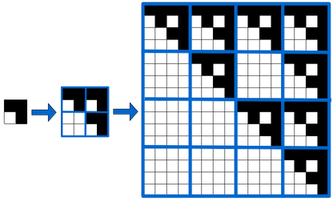

A Alice adora todo o tipo de figuras e padrões geométricos. Num certo dia, ao observar o caderno quadriculado do Bernardo, reparou num belíssimo padrão que ele lá tinha desenhado. Intrigada, perguntou-lhe como o tinha obtido. O Bernardo, com um sorriso de orelha a orelha, explicou-lhe todo o processo. Inicialmente, ele escolhe um quadrado de NxN quadrículas, pintando algumas delas, sendo este o padrão inicial. Um exemplo seria o seguinte quadrado de 3x3:
De seguida, o Bernardo inicia um processo de replicação. Para isso ela pega num novo quadrado de N2xN2 e divide-o em NxN "super-quadrículas", cada um delas com NxN quadrículas pequenas. Se no padrão inicial uma quadrícula está vazia, a super-quadrícula correspondente no novo quadrado fica vazia. Se no padrão inicial essa quadrícula está pintada, então a super-quadrícula fica com um cópia exata do padrão inicial. A figura seguinte ilustra este processo:
Para identificar o padrão inicial dizemos que é da 1ª geração. O padrão seguinte, de N2xN2, é de 2ª geração. O padrão de 3ª geração tem dimensões N4xN4 e pode ser obtido aplicando o mesmo processo de replicação ao padrão de 2ª geração como se fosse ele o inicial. De um modo geral, a geração i de um dado padrão pode ser obtida usando o processo de replicação descrito e considerando o padrão de geração i-1 como sendo o inicial. Se o padrão inicial tem dimensões NxN, o padrão respetivo de geração G tem dimensões N2(G-1)xN2(G-1). A figura seguinte ilustra três gerações sucessivas de um padrão inicial de 2x2:

A Alice ficou fascinada e decidiu começar a desenhar esses padrões no seu próprio caderno. Para passar o tempo enquanto espera pelo autocarro que a leva à escola, a Alice resolveu começar a contar o número de quadrículas pintadas num dado padrão. Como são muitas quadrículas e o autocarro está quase a chegar, ela decidiu contar apenas as quadrículas num dado subretângulo do padrão. Por exemplo, a figura seguinte ilustra um subretângulo - com cantos nas posições (8,5) e (12,14) - contendo exatamente 17 quadrículas pintadas.
Será que podes ajudar a Alice a contar as quadrículas pintadas?
Dado um padrão inicial de NxN quadrículas (umas pintadas, outra vazias) e um número G indicando em que geração do padrão estamos interessados, a tua tarefa é responder a P perguntas, cada uma delas indicando um subretângulo dentro do padrão de geração G, sendo que desejamos saber quantas quadrículas estão pintadas dentro desse subretângulo.
Na primeira linha vêm dois inteiros N e G, indicando que estamos interessados na geração G de um padrão inicial de NxN.
Seguem-se exatamente N linhas, cada uma com N caracteres, descrevendo o padrão inicial. Um caracter '#' indica uma quadrícula pintada e um caracter '.' indica uma quadrícula vazia.
Na linha seguinte vem um inteiro P, indicando o número de perguntas, seguido de P linhas, cada uma com quatro inteiros y1 x1 y2 x2 indicando o subretângulo da pergunta respetiva, sendo que (y1,x1) é o canto superior esquerdo e (y2,x2) é o canto inferior direito.
O output deve ser constituído por P linhas, cada uma com um único inteiro indicando o número de quadrículas do retângulo da pergunta respetiva.
São garantidos os seguintes limites em todos os casos de teste:
| 2 ≤ N ≤ 7 | Lado do quadrado do padrão inicial | |
| 1 ≤ G ≤ 5 | Geração do padrão | |
| 1 ≤ N2(G-1) < 231 | Lado do quadrado do padrão de geração G | |
| 1 ≤ P ≤ 500 | Número de perguntas | |
| 0 ≤ y1 ≤ y2 < N2(G-1) | Coordenadas X e Y dos retângulos das perguntas | |
| 0 ≤ x1 ≤ x2 < N2(G-1) | ||
| 1 ≤ y2 - y1 ≤ 106 | Lado do subretângulo de uma pergunta | |
| 1 ≤ x2 - x1 ≤ 106 |
É também garantido que número de quadrículas pintadas do padrão inicial é inferior ou igual a 10.
Para um conjunto de casos de teste valendo 25% dos pontos, acontece sempre que N2(G-1)≤100 e P≤50.
Para um conjunto de casos de teste valendo 50% dos pontos, acontece sempre que N2(G-1)≤2500.
Para um outro conjunto de casos de teste valendo mais 25% dos pontos, N2(G-1)>106 mas os subretângulos são no máximo de 50x50, ou seja (y2-y1)≤50 e (x2-x1)≤50.
2 3 ## .# 3 8 5 12 14 2 4 10 15 3 0 13 5
17 43 4
Um padrão inicial de 2x2 que dá origem a um padrão de 3ª geração de 16x16. Os subretângulos das 3 perguntas são os indicados a seguir e têm respetivamente 17, 43 e 4 quadrículas pintadas:
3 2 #.# .#. #.# 4 2 2 6 6 0 0 8 8 1 1 4 7 3 2 7 3
9 25 7 3
Um padrão inicial de 3x3 que dá origem a um padrão de 2ª geração de 9x9. Os subretângulos das 4 perguntas são os indicados a seguir e têm respetivamente 9, 25, 7 e 3 quadrículas pintadas: